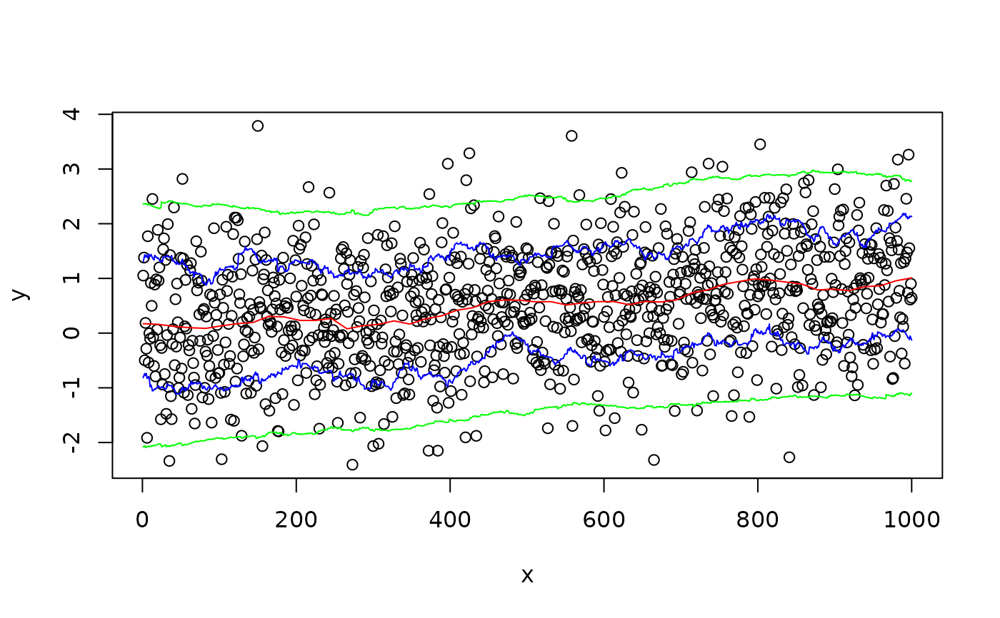

wapply.RdThis function applies the specified function to the sets of y values
that are defined by overlapping "windows" in the x-dimension. For
example, setting fun=mean returns local means, while setting
fun=function(x) sqrt(var(x)) returns local estimates of
the standard deviation.
wapply(x, y, fun=mean, method="range", width, n=50, drop.na=TRUE,
pts, ...)vector of x values for (x,y) pairs
vector of y values for (x,y) pairs
function to be applied
method of defining an x-neighborhood. One of "width","nobs","range", or "fraction". See details.
width of an x-neighborhood. See details.
Number of equally spaced points at which to compute local estimates. See details.
should points which result in missing values NA
be omitted from the return value. Defaults to true.
x locations at which to compute the local mean when
using the "width" or "range" methods. Ignored otherwise.
arguments to be passed to fun
Two basic techniques are available for determining what points fall
within the same x-neighborhood. The first technique uses a window with
a fixed width in the x-dimension and is is selected by
setting method="width" or method="range". For
method="width" the width argument is an absolute
distance in the x-dimension. For method="range", the width is
expressed as a fraction of the x-range. In both cases, pts
specifies the points at which evaluation of fun occurs. When
pts is omitted, n x values equally spaced along the x
range are used.
The second technique uses windows containing k neighboring points. The
(x,y) pairs are sorted by the x-values and the nearest k/2 points with
higher x values and the k/2 nearest points with lower x values are
included in the window. When method="nobs", k equals
width (actually 2*floor(width/2) ). When
method="fraction", width specifies what fraction of the
total number of points should be included. The actual number of points
included in each window will be floor(n*frac/2)*2. Regardless of the
value of pts, the function fun will be evaluated at all
x locations.
Returns a list with components
x location'
Result of applying fun to the window about each x location
#show local mean and inner 2-sd interval to help diagnose changing mean
#or variance structure
x <- 1:1000
y <- rnorm(1000, mean=1, sd=1 + x/1000 )
plot(x,y)
lines(wapply(x,y,mean),col="red")
CL <- function(x,sd) mean(x)+sd*sqrt(var(x))
lines(wapply(x,y,CL,sd= 1),col="blue")
lines(wapply(x,y,CL,sd=-1),col="blue")
lines(wapply(x,y,CL,sd= 2),col="green")
lines(wapply(x,y,CL,sd=-2),col="green")
#show local mean and inner 2-sd interval to help diagnose changing mean
#or variance structure
x <- 1:1000
y <- rnorm(1000, mean=x/1000, sd=1)
plot(x,y)
lines(wapply(x,y,mean),col="red")
CL <- function(x,sd) mean(x)+sd*sqrt(var(x))
lines(wapply(x,y,CL,sd= 1,method="fraction",width=1/20),col="blue")
lines(wapply(x,y,CL,sd=-1,method="fraction",width=1/20),col="blue")
lines(wapply(x,y,CL,sd= 2,method="nobs",width=250),col="green")
lines(wapply(x,y,CL,sd=-2,method="nobs",width=250),col="green")
